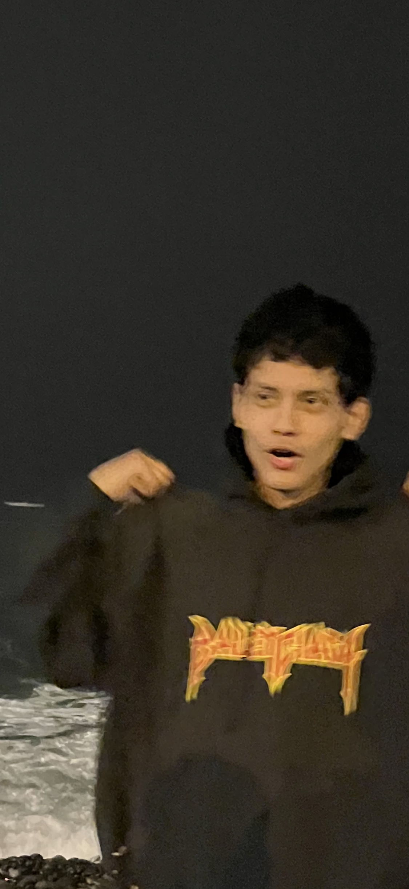

Who I Am
Hi, I'm Gabriel Ciccia, a 21-year-old programmer from Peru with a passion for coding, technology, and innovation. From building responsive websites to crafting complex algorithms, I thrive on solving challenging problems and creating solutions that make a difference. My journey in computer science started with an associate's degree and has continued through self-driven learning and personal projects.
When I’m not coding, I enjoy exploring the latest advancements in the tech world, playing video games, and working on side projects that push my creative boundaries. My favorite quote, "Everything is possible," motivates me to tackle new challenges and continue growing as a developer.